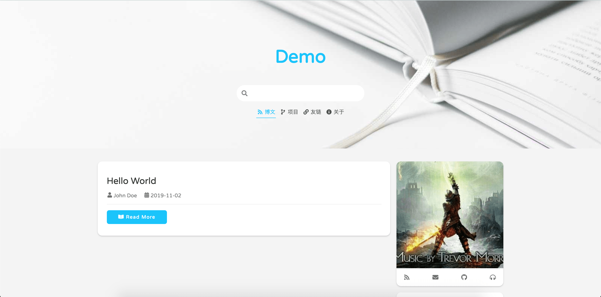
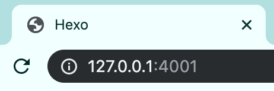
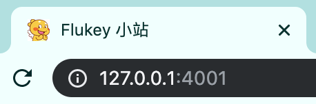
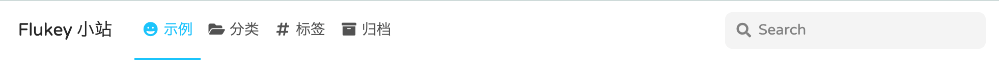

2016 年 2 月，写了工作中第一篇博客。至今快 4 年时间，写了几十篇文章，也使用过几个平台。
直到接触到 jekyll 、 Hexo 这样的博客生成工具。前者使用一年，没多研究其扩展功能。本文将介绍使用 Hexo 建站的步骤。
本文适用于初学者，如果您已具备 Hexo 建站技能，需要丰富下网页的功能，请参阅[Hexo 建站手札——进阶](/blog/2019-11-03/)。
1. 准备工作
万事开头难，建站也是需要做一些准备的。
- 搭建 Hexo 环境。
- 熟悉用 MarkDown 写作。
- 代码托管平台。
- 使用 Hexo 建站，建议参照官方文档。
- 如果您还在使用 html 排版的方式，只能说 out 了。使用 md 写作，快速排版，实时对比。
- 将文章存放在 GitHub 或 GitLab 等这样的开源平台，或者购买域名服务器。
建议前期使用开源平台，因为免费，入门简单。甚至不需要编码基础。
1.1 创建仓库
- 注册 GitHub 。假如用户名是
flueky,那么你的 GitHub 主页地址是 https://github.com/flueky。 - 创建仓库，必须名字是 flueky.github.io ,其中
flueky替换成你自己的 GitHub 账户名字。即，创建完后，仓库地址是 https://github.com/flueky/flueky.github.io。
将此仓库作为博客主页后 ，可以直接使用域名 https://flueky.github.io/ 访问 。
主题来自于 xaoxuu 的 matrial x 。
2. Hexo 常用命令
2.1 创建目录
1 | 创建 blog 目录 |
下面的命令，如无特殊说明，都是在 blog 目录下执行。
2.2 启动服务
1 | 默认启动参数，访问地址：http://127.0.0.1:4000 |
2.3 部署博客
1 | 在配置好站点后，将博客文件推送至站点 |
3. 初始化博客
正确搭建好 Hexo 环境后，可以使用 init 命令完成博客目录创建。
init 命令完成后，启动服务见到下面的页面表示成功。
文件列表如下，未列出的皆为命令生成的文件，无须添加到版本控制工具中。
1 | # 博客文件 |
使用主题 material-x。
1 | 在 blog 目录中执行，获取主题源码 |
或者直接使用 xaoxuu 或 flueky 整理好的 demo 。
1 | 获取 xaoxuu 源码 |
在博客配置文件 _config.yml 中切换主题。
1 | # theme: landscape # 注释旧主题 |
再次启动服务见到下面的页面表示成功。
4. 个性化配置
以下配置 ，均是基于 material-x 主题。
4.1 修改站点 logo 和 标题
修改前：
修改博客配置文件 _config.yml。
1 | # Site |
修改后：
4.2 修改主页标题
修改前：
修改主题配置文件 _config.yml。
1 | # page的封面 |
4.3 修改用户LOGO
修改前：
修改主题配置文件 _config.yml。
1 | # 侧边栏小部件配置 |
4.4 修改作者信息
1 | # Site |
4.5 配置菜单
菜单指主页标题，搜索框下四个模块。
1 | # page的封面 |
按照上面的配置修改后，请在 source 目录下做如下操作。
建立 projects 文件夹，创建 index.md 文件。内容：
1
2
3---
title: 项目
---建立 friends 文件夹，创建 index.md 文件。内容：
1
2
3
4
5
6
7
8
9
10
11
12
13
14
15
16
17
18
19
20
21
22
23
24
25
26---
layout: links
title: 我的朋友们
sidebar: []
links:
- group: 欢迎各行各业的朋友
icon: fas fa-handshake
items:
- name: '<i class="fas fa-comment fa-fw" aria-hidden="true"></i> 赶快留言吧'
avatar: https://cdn.jsdelivr.net/gh/xaoxuu/assets@18.12.27/avatar/avatar.png
url: '#comments'
backgroundColor: '#869989'
textColor: '#FFFD'
tags:
- 1~4个标签
- 两个最佳
---
<br>
各位大佬想交换友链的话可以在下方留言，必须要有名称、头像链接、和至少一个标签哦～
> 名称： Flueky Tech-site
头像： https://flueky.github.io/pic/img/user_icon.gif
网址： https://flueky.github.io
标签： Android建立 about 文件夹，创建 index.md 文件。内容：
1
2
3---
title: 公开的秘密
---
4.6 配置导航栏
material-x 导航栏默认不可见，电脑端需要上滑页面至主页图片消失时显示 。手机端点击右上角图标显示。此处只 列出 电脑端的配置 。
1 | # 桌面端导航栏菜单 |
按照上面的配置修改后，请在 source 目录下做如下操作。
建立 categories 文件夹，创建 index.md 文件。内容：
1
2
3
4
5---
layout: category
index: true
title: 所有分类
---建立 tags 文件夹，并创建 index.md 文件。内容：
1
2
3
4
5---
layout: tag
index: true
title: 所有标签
---建立 archives 文件夹。无须创建 index.md 文件， hexo 已经处理 。
4.7 使用 icon
material-x 支持使用 fontawesome 的 icon 。
1 | icon: fas fa-grin # 图片名是 grin |
4.8 配置部署
修改博客配置文件 _config.yml。
1 | deploy: |
之后使用 deploy 命令部署到指定的仓库地址上 ，就可以使用 https://flueky.github.io访问。可能需要等待几分钟。
截止到这里，已经可以尽情的写文章了。文章中以 GitHub 为例，所有用户名 flueky 需要换成自己的。
觉得有用？那打赏一个呗。[去打赏](/donate/)